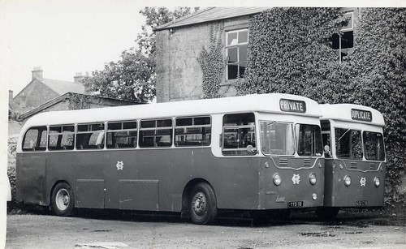

Autóbuszok története
Azonban a nagyobb befogadóképességű buszok korának beköszöntéséhez még nagy szükség volt az erős felfüggesztés
megoldására (1898, Daimler), a nagy nyomatékú dízelmotor feltalálására (1893, Rudolf Diesel; első legyártott: 1897
Maschinefabrik Augsburg – MAN). Valamint ami még elengedhetetlen: szükség lett gumikerekek alkalmazására is.
A 20-as évek végére tehető a busz- és teherautó-fejlődés elkülönülése, a buszok jóval alacsonyabb (700 – 800 mm)
padlószintre tettek szert. Ekkor a járművek már alkalmasak voltak úgy 50-60 ember elszállítására is. Körülbelül
ebben az időben kezdtek megalakulni a közlekedési vállalatok is.
1930 körül ismét egy újítás, a járművek ezentúl acélból készülnek, így sokkal strapabíróbbá, megbízhatóbbá
válnak. Míg az eddigi buszok leginkább csak városi vagy elővárosi forgalom ellátására voltak alkalmasak, hamarosan
megjelentek a turistabuszok is (köztük a legjelentősebb 1934-ben a Mercedes-Benztől).

autóbuszok kategorizálása
autóbuszok